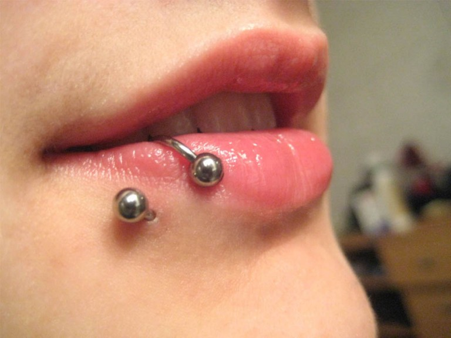

LadyDark Tattoo

Dependiendo de la zona de la boca en la que se realice la
perforación se pueden llevar joyas en diferentes partes de
los labios. Cuando las conozcas todas, podrás decidir con
mejor criterio cuál de ellos es el más adecuado para ti.